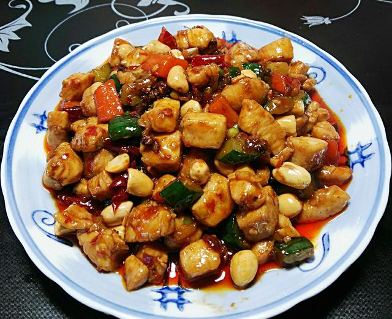

粤菜 · Yue Cuisine
清鲜背后的精细与兼容
一、起源与历史
粤菜发源于岭南地区，秦汉时已有“食不厌精”的雏形，明清伴随通商与移民，融合南洋、西洋饮食技艺，形成“生猛鲜活、兼容并蓄”的体系，烹饪思想强调“以鲜为魂”，讲究清、鲜、嫩、滑的本味呈现。
二、地理与气候影响
岭南地区高温多雨、物产丰饶（海鲜、果蔬、禽畜资源密集），气候湿热促使饮食偏向清润、淡爽，同时通商口岸的开放让粤菜吸纳了海外食材与调味方式
三、主要烹调技法
- 炒
- 煲
- 蒸
- 烤
- 焗
每种技法都追求“锁住本味”，如清蒸突出食材鲜度，生啫保留香气，白灼体现爽嫩。
四、代表菜肴
-
白切鸡

-
煲仔饭
-
菠萝咕噜肉
五、风味与审美
粤菜的独特在于“以清为贵、以鲜为本、以和为美”，追求淡中显鲜、嫩中带爽的平衡，味觉逻辑体现了岭南人“务实而精致”的生活态度
六、文化意象
粤菜不仅是饮食，更是岭南开放包容、敢为人先的象征——从茶楼早茶的“一盅两件”到高端宴席的“翅鲍参肚”，粤菜承载了“烟火气里的雅致”与“商埠文化的兼容”
七、地方俗语
食在广州，厨出凤城（顺德）
宁可食无菜，不可食无汤
拓展视野：视频
拓展视野：学术资料
| 研究论文 / 报告名称 | 链接 |
|---|---|
| 《粤菜文化的传承与现代创新》 | 查看论文 |